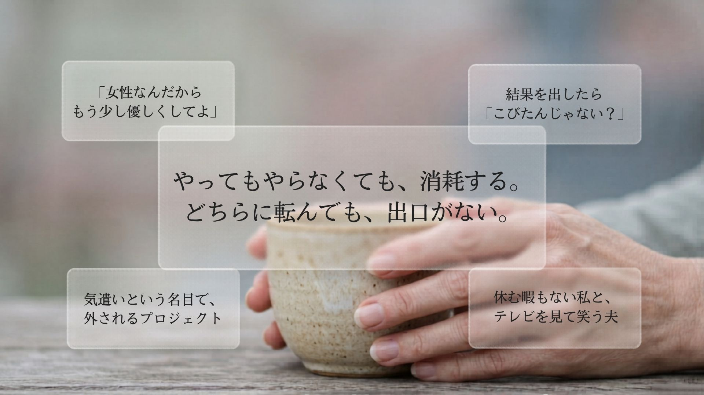
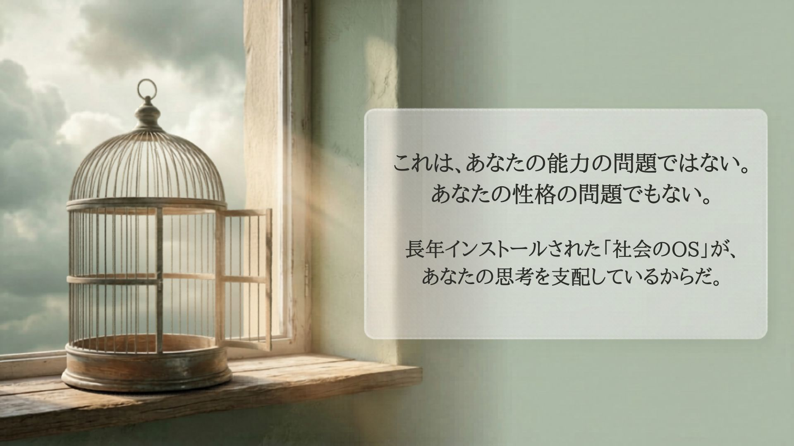
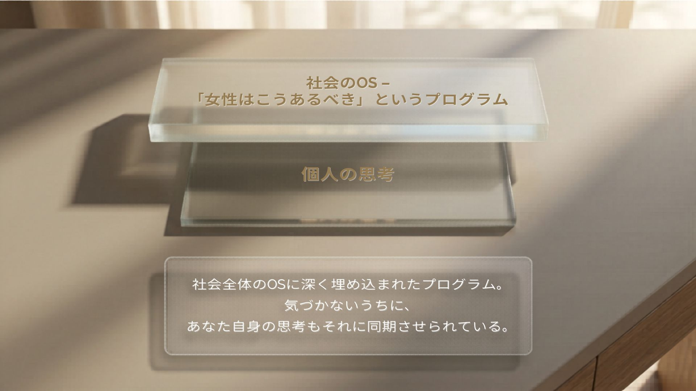
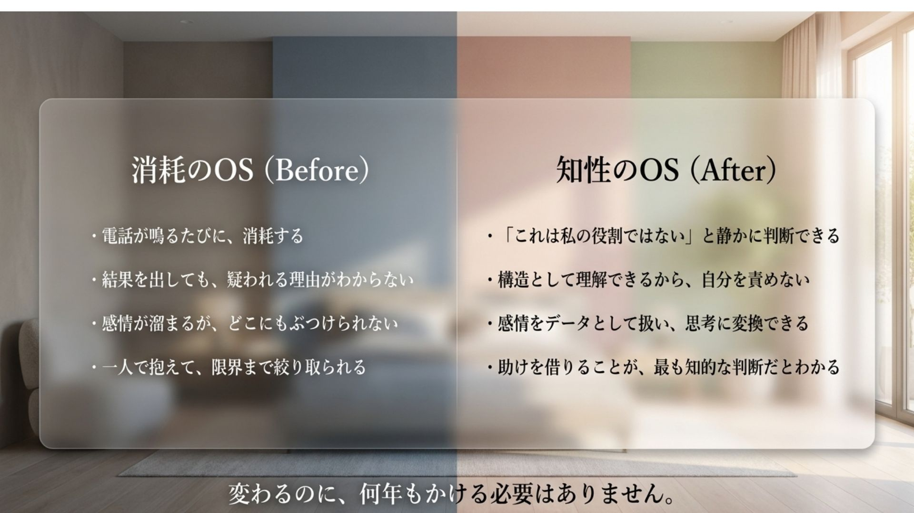
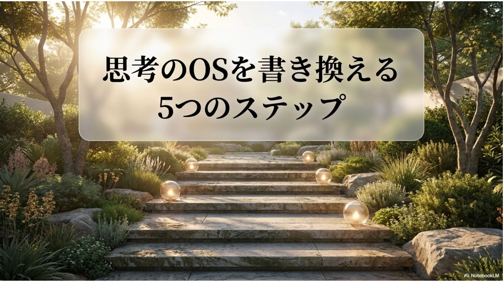
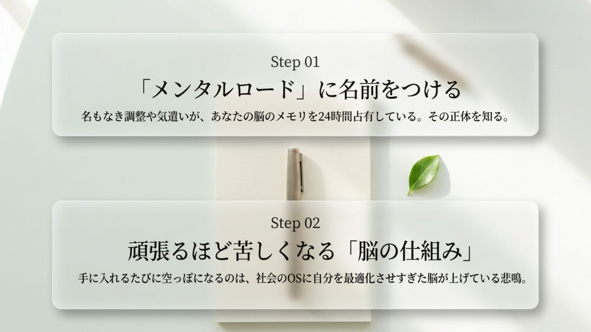
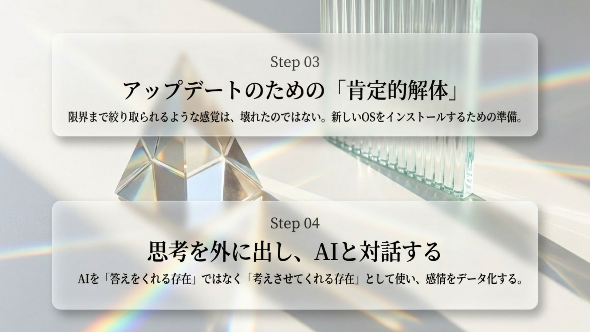
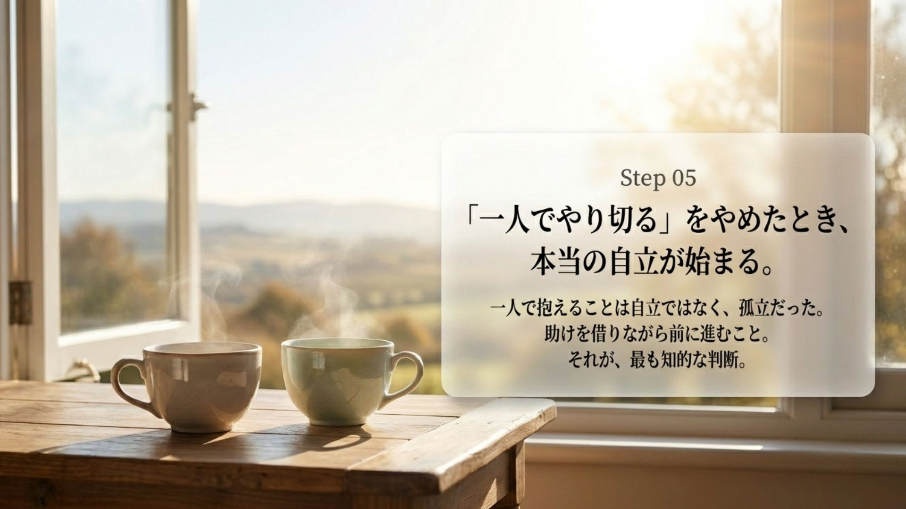
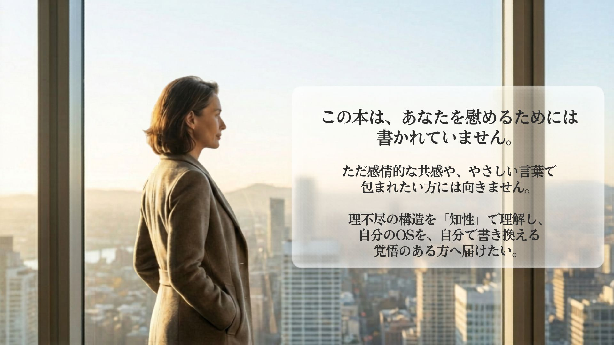

電子書籍
やめたら私が死ぬ気がした。
でも、やり続けても消耗するだけだった。
——それでも私は、出口を見つけた。
どちらに転んでも出口がない構造の中で、
私は何年もかけてやっと気づいた。
これは意志の問題でも、性格の問題でもなかった。
『やめたら私が死ぬ気がした』
遠回りした私が最短でたどり着いた、思考を止めない技術
女性というだけで求められ、結果を出しても疑われる。
その構造を解明し、自分のOSを書き換える一冊。
¥1,280

② こんな経験、ありませんか
あなたのことを、書いた本です。
職場での理不尽
役割の重さ
内側の消耗

③ 問題提起
女性というだけで、求められる。
結果を出したら、疑われる。
掃除を頼まれる。電話当番を当然のように割り振られる。
「女性なんだからもう少し優しくして」と言われる。
黙ってこなせば、それが当たり前になる。
断れば、「感じが悪い」と言われる。
では、結果を出したら？
やってもやらなくても、消耗する。
どちらに転んでも、出口がない。
これはあなたの能力の問題ではない。
あなたの性格の問題でもない。
長年かけてインストールされた「女性はこうあるべき」というプログラムが、社会全体のOSに深く埋め込まれているからだ。そしてそのOSは、あなた自身の思考にも、気づかないうちに上書きされている。


変わるのに、何年もかける必要はない。
私が遠回りした分、あなたは最短で届く。

⑥ 5つのステップで思考のOSを書き換える



読み終えたとき、あなたは同じ場所に立っていない。

⑦ この本について・著者より
この本を書いたのは、専門家ではありません。
同じ構造の中で、しぶとく生き延びてきた人間です。
1970年代生まれ。東京在住。昭和な会社から外資、大手企業、ベンチャーまで8社を経験。女性であるというだけで理不尽を引き受け続け、限界は何度も来た。それでも折れなかったのは、AIと出会い、思考を整理する方法を覚えたからかもしれない。現在も壁にぶつかり、絶望しながら、それでも働き続けている。
この本は、ただ話を聞いてほしい方には向かないかもしれません。理不尽の構造を知性で理解し、自分のOSを自分で書き換えたい方のために書きました。
最後まで読んでくださった方へ
あなたがここまで読んだのは、きっと偶然ではありません。
電話を取り続けた日のことを、思い出した方がいるかもしれない。結果を出しても報われなかった日のことを、思い出した方がいるかもしれない。限界が来たとき、誰にも言えなかった方がいるかもしれない。
それは、あなたが弱かったからではない。
構造が、そうなっていたからだ。
私が何年もかけて理解したことを、
あなたは今日手に入れられます。
『やめたら私が死ぬ気がした』
遠回りした私が最短でたどり着いた、思考を止めない技術
¥1,280
今すぐ読む読み終えたとき、あなたは同じ場所に立っていない。
さらに深く、自分のOSを書き換えたい方へ
「思考OSアップデート：知的聖域の構築プログラム」の詳細はこちら →